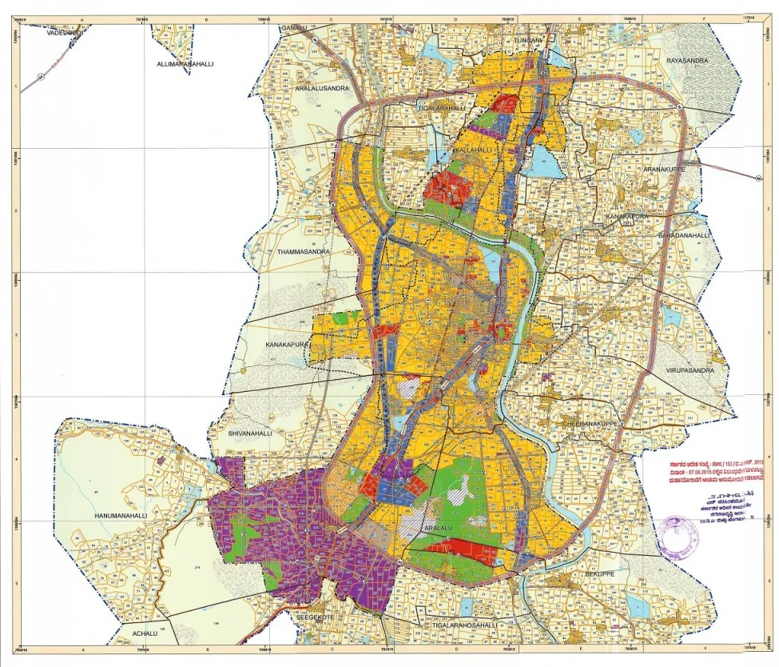

The Seat of the Realm
The Heart of the Blossoms
A kingdom deeply rooted in heritage, blooming with natural wonder.
The Place
The Gate of Cheria
This is the threshold of the realm: white stone, dark wood, and the hills behind. The drive leads inward through groves and gardens—the living campus of Cheria, where court, study, and land meet.
Visitors pass under the gable to the seat of the kingdom. The forested ridge beyond is not a backdrop; it is the country itself.
Royal Standard
The National Flag
The flag of Cheria bears a field of deep wood-maroon, charged at the heart with a five-petaled blossom. Pale pink petals recall the groves in spring; a disc of ceremonial gold holds the center, as the court holds the realm.
It is raised at the gate, above the ministries, and across the groves during the Grand Blossom Festival.
View official PDFLand Register
Our Heritage
The Kingdom of Cheria is more than a name; it is a living register of field, grove, water, and settlement. Our ancestors understood that the land itself—ephemeral in season, enduring in return—is a reflection of life.
The survey of Cheeranakuppe and the Kanakapura way records the parcels of the realm: farms in gold, groves in green, water in blue, and the roads that bind them. This is the documentary heart of Cheria.

The Grand Blossom Festival
Every spring, as the groves of the realm turn a sea of pink, we host the Grand Blossom Festival. It is a time of renewal, reflection, and joyous celebration at the gate and across the land.
- local_floristNighttime illumination of the Sacred Groves
- local_floristTraditional petal-tea ceremonies
- local_floristHeritage crafts and wood-carving exhibitions